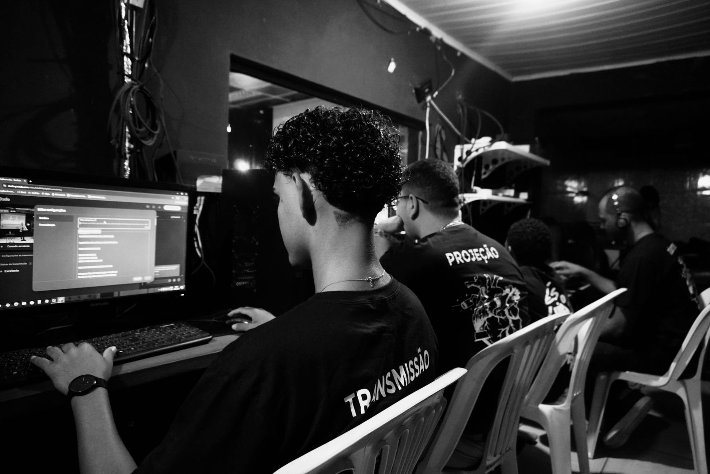

Ministério Multimídia
Usando a tecnologia para propagar a mensagem de Cristo.
Nosso Ministério de Multimídia é dedicado a utilizar recursos audiovisuais e digitais para criar um ambiente de adoração envolvente e acessível. Acreditamos no poder da tecnologia para conectar pessoas e levar a Palavra de Deus a todos os cantos.
Nossa equipe é formada por voluntários apaixonados por projeção, iluminação e transmissão ao vivo. Trabalhamos juntos para garantir que a mensagem de cada culto e evento seja transmitida com clareza e excelência.
Nosso Trabalho em Ação
Transmissão Ao Vivo
Transmissões de alta qualidade para alcançar quem não pode estar presente.
Detalhes técnicos para uma experiência de culto online imersiva.
Software e dedicação para levar a palavra a milhares de lares.
Trabalho em equipe nos bastidores para que tudo funcione perfeitamente.
Programação da Semana
- Domingo: Cultos (08:00h e 18:00h- Sala de Controle)
- Quinta-feira: Culto (19:30h)
- Siga nossas redes sociais para o conteúdo diário! @ibnovavida
Conheça Nossos Professores e Voluntários:
Amanda
Líder Sênior
Dhow
Líder Sênior
Seja um Voluntário no Ministério de Multimídia!
Para mais informações sobre o Ministério de Multimídia, entre em contato conosco!
Fale Conosco Voltar para Ministérios